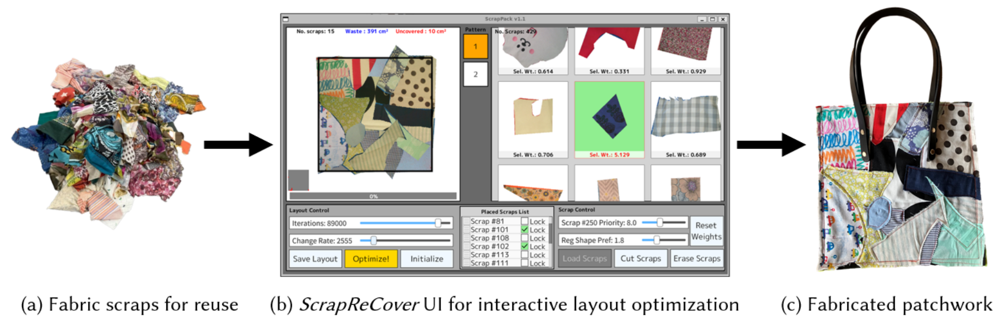
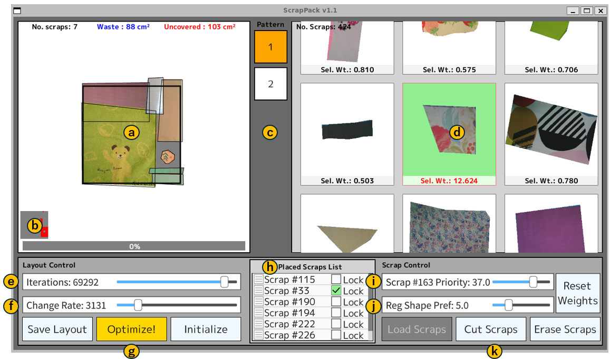
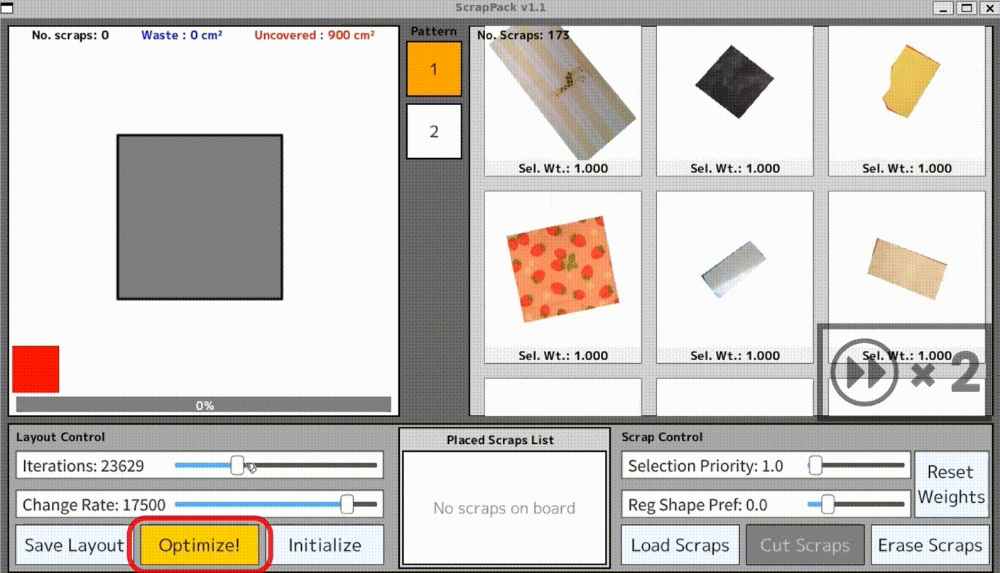
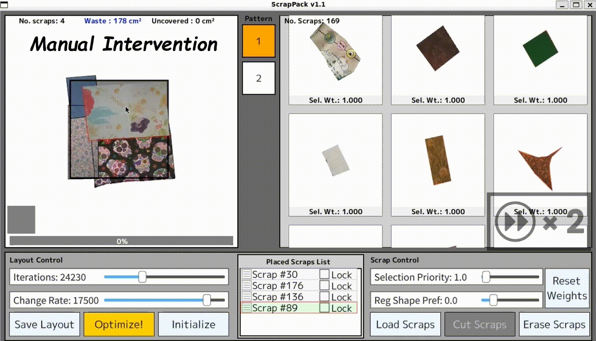
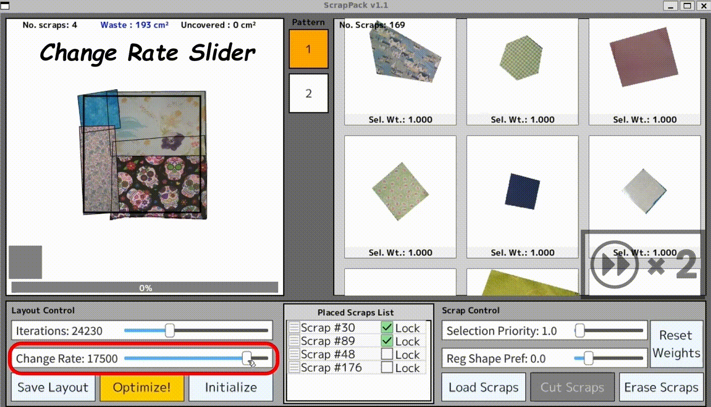
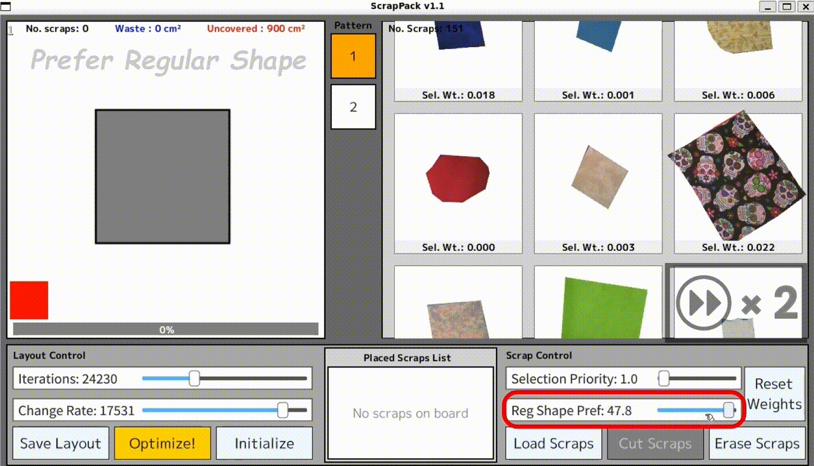
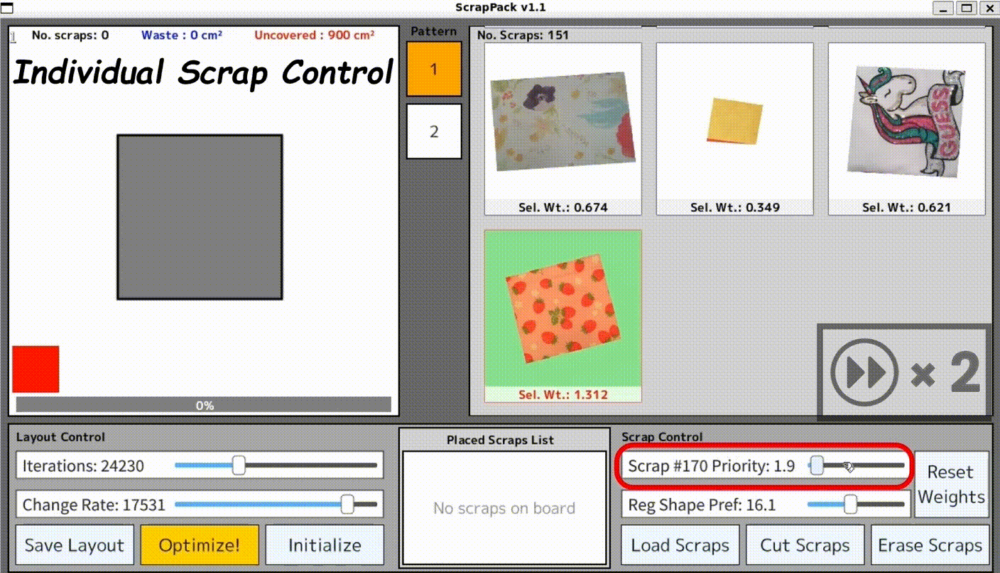
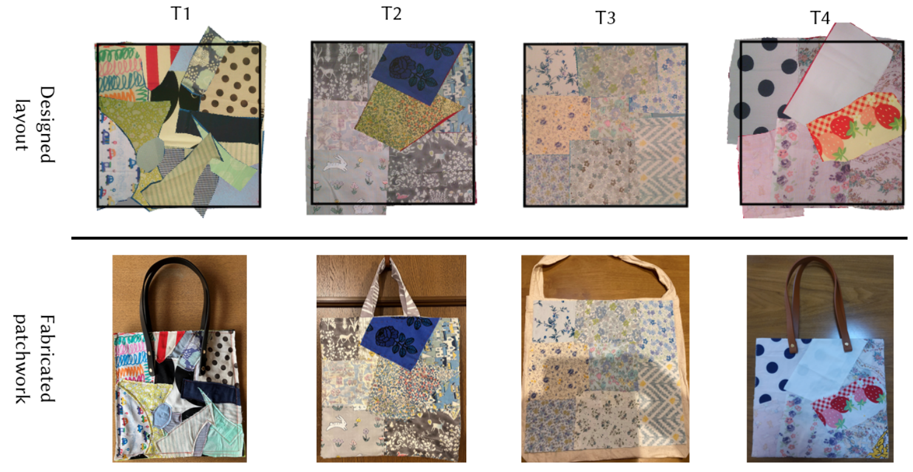
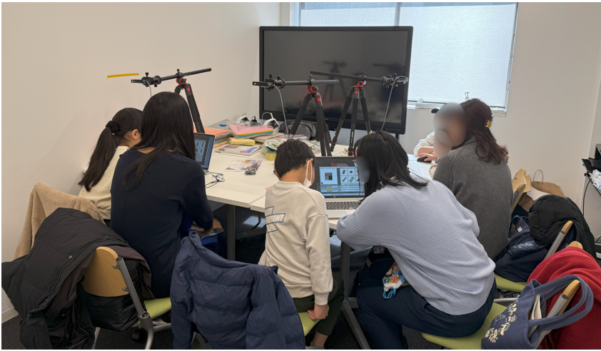

ScrapReCover is an interactive tool for designing freeform patchwork layouts from fabric scraps. (a) Users begin by loading the scraps they wish to reuse. (b) Using ScrapReCover, they can iteratively refine the layout by combining manual adjustments of individual scraps with automatic placement suggestions guided by intuitive parameters. For automatic suggestions, the system arranges scraps within the target area, following an optimization strategy that minimizes material waste while ensuring complete coverage. (c) Finally, the resulting layout can be fabricated into a unique (collage-like) patchwork product. ScrapReCover は, 不要になった布切れ（端切れ）から自由形状のパッチワークレイアウトを設計するためのインタラクティブなツールです. (a) ユーザーはまず, 再利用したい布切れを読み込むことから始めます. (b) ScrapReCoverを使用することで, ユーザーは個々の布切れの手動調整と, 直感的なパラメータに基づく自動配置提案を組み合わせながら, レイアウトを反復的に洗練させることができます. この自動提案において, システムは, 対象領域（型紙）の完全被覆を保証しつつ材料の無駄を最小限に抑えるという最適化戦略に従って, 領域内に布切れを配置します. (c) 結果として得られたレイアウトは, コラージュアートを想起させるような, 独特なパッチワーク作品として製作することができます.
We present ScrapReCover, an interactive tool for designing freeform patchwork layouts from small leftover fabric scraps. The system enables users to iteratively refine the layout by combining manual adjustments of individual scraps with automatic placement suggestions guided by user-controlled parameters. These parameters can be intuitively adjusted to control the degree of modification from the current layout and to prioritize specific types of scraps. For automatic suggestions, the system generates layouts by arranging arbitrarily shaped scraps within the target area, using an optimization strategy that minimizes material waste while ensuring complete coverage. To achieve this functionality, ScrapReCover employs simulated annealing (SA), a robust metaheuristic and stochastic algorithm known for its effectiveness in packing-like problems, integrated with a rasterized representation of both scraps and pattern shapes. The usability of the system was validated through a user study in which 21 participants interactively generated layouts and fabricated patchworks from their own scraps. Additionally, the optimization method was evaluated by baseline comparisons which demonstrate that our approach outperforms other naive methods.
本研究では, 任意形状の布切れを用いた自由形パッチワークのレイアウト制作を支援するインタラクティブなデザインツール「ScrapReCover」を提案する. 本システムは, ユーザーによる手動調整と, 配置の変更度合いや布切れの優先度などの直感的なパラメータに基づく自動配置提案とを組み合わせることで, 反復的なレイアウトの洗練を可能にしている. 自動配置の問題設定は, 任意形状の布切れ（小さな多角形集合）が対象領域（大きな多角形）を完全被覆する幾何学的被覆問題として定式化されており, 問題を適切に離散化したうえでメタヒューリスティックな乱択アルゴリズム「焼きなまし法」を適用することで, 効率的な最適化を実現している. 21 名の参加者によるユーザースタディでは, 各自が持参した布切れを用いて自由にレイアウトを設計し, 希望者には実際に縫製も行ってもらうことで, 本システムの実用性を確認した. 加えて, 我々の最適化アルゴリズムが, ナイーブな手法よりも定量的に優れていることも確認された.
ScrapReCover allows users to iteratively design patchwork layouts through a combination of optimization-based automatic suggestion and manual adjustments.
ScrapReCoverは, 最適化に基づく自動提案と手動調整を組み合わせることで, ユーザーが反復的にパッチワークのレイアウトを設計することを支援します.

The UI consists of five main components: Layout Workspace (top left, a-c), where scraps are placed onthe pattern; Available Scraps List (top right, d), which displays the unplaced scraps; Layout Control Panel (bottom left, e-g), a setof global layout controls; Placed Scraps List (bottom center, h), which enumerates the placed scraps; and Scrap Control Panel(bottom right, i–k), a set of controls for individual scraps. ScrapReCoverのUIは, 5つの主要なコンポーネントで構成されています：布切れを型紙上に配置するレイアウトワークスペース（左上, a-c）, 未配置の布切れを表示する使用可能布切れリスト（右上, d）, レイアウト全体の制御機能を持つレイアウト操作パネル（左下, e-g）, 配置済みの布切れを一覧表示する配置済み布切れリスト（中央下, h）, そして個々の布切れに対する操作機能を持つ布切れ操作パネル（右下, i-k）です.

Automatic Suggestion via Optimization (SA)
Automatically places scraps to minimize waste while completely covering the target area.
最適化（SA）による自動提案
対象領域を完全被覆しつつ, むだを最小化するよう布切れを自動配置.

Manual Adjustments
Drag, rotate, delete, and lock scraps manually.
手動調整
移動・回転・削除・固定等の手動操作.

Change Rate
Controls the degree of modification from the current layout. (Low: Minor, High: Drastic)
変更度合い
現在のレイアウトからの変更度合いを制御. （低：微調整, 高：大幅な変更）

Regular Shape Preference
Globally prioritizes regular (High) vs. irregular (Low) shapes.
正則形状優先度
全体的な形状の優先度を設定.（高：矩形, 低：不規則）

Selection Priority
Adjusts the selection probability for individual scraps.
選択確率
個々の布切れが選択される確率を調整.
Some participants in our user study brought their own scraps, designed layouts using ScrapReCover (top) and subsequently fabricated a tote bag in real based on their designs (bottom). ユーザスタディ参加者は, 不要になった布切れを持参し, ScrapReCoverを用いてレイアウトを設計した後（上）, そのデザインに基づいて実際にトートバッグを制作しました（下）.

The user study was organized and conducted as part of a public exhibition, in cooperation with Science Park and Ochanomizu University, with on-site operations supported by students from the university.
The application development and preparation were realized thanks to the Siv3D framework.
本ユーザースタディは、サイエンスパークおよびお茶の水女子大学との協力のもと、イベントの一環として実施され、当日の運営は同大学の学生にサポートしていただきました。
また、本アプリケーションの実装や準備はSiv3Dフレームワークのおかげで実現しました。

@inproceedings{kono2025scraprecover,
title={ScrapReCover: An Interactive Optimization System for Freeform Patchwork Layouts},
author={Kono, Masahiro and Larsson, Maria and Shen, I-Chao and Igarashi, Takeo},
booktitle={Proceedings of the ACM Symposium on Computational Fabrication},
pages={1--15},
year={2025}
}